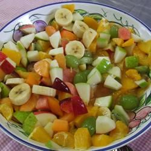

Very Easy Fruit Salad

In a hurry? Make this fruit salad in about 10 minutes. You can add or subtract different fruit according to your taste and what is in season.
Ingredients
- 1 1 pint strawberries - cleaned, hulled and sliced
- 2 1 pound seedless grapes, halved
- 3 3 kiwis, peeled and sliced
- 4 3 bananas, sliced
- 5 1 (21 ounce) can peach pie filling
Steps
- 1 In a large bowl, combine the strawberries, grapes, kiwis, and bananas. Gently mix in peaches. Chill for 1 hour before serving.